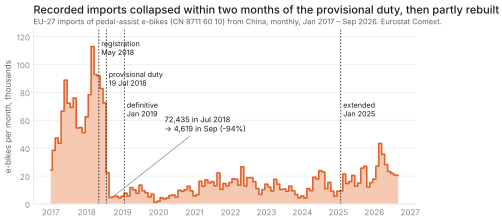
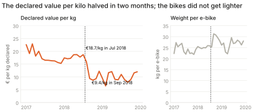
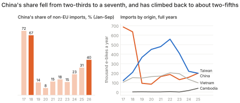
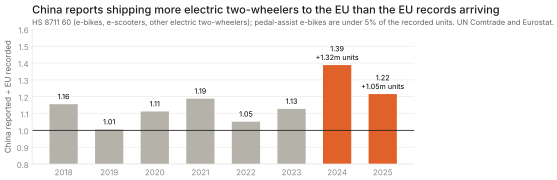
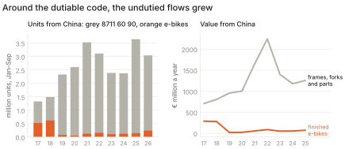

On the customs record, yes — but the collapse came half a year before "2019", the drop has partly reversed, and the record misses part of the flow. Recorded imports from China fell 94% within two months of the provisional duty of July 2018 and were 85% lower in 2019 than in 2018. China has since rebuilt to about two-fifths of non-EU imports, and customs cases show e-bikes entering outside the record; a mirror gap in the wider electric two-wheeler category (1.39 in 2024 and 1.22 in 2025, against 1.01–1.19 before) is consistent with that but does not measure it. How much harm the duties prevented cannot be read from trade data.
| Who is asking | What the evidence says | What to do |
|---|---|---|
| An importer choosing suppliers to 2030 | Duties run to January 2030; the next risk is a lane that grows fast, as Cambodia now does | Keep two lanes; document origin and value added now |
| An EU producer or trade body | The measure works at the border it can see; leaks sit in classification, kits and false declarations | Push enforcement on codes and kits, not higher rates |
| Anyone repeating the Commission's line | "Since 2019" dates the definitive duties; imports collapsed half a year earlier, after the provisional duty of July 2018 | Date the effect from July 2018 |

"Did the duties work?" is asked by people with different stakes. An importer wants to know which supply lanes carry duty risk to 2030, when the extended measures expire [C03]. A producer wants to know whether the protection is real or leaking. The question underneath both is narrower: did the duty change what crosses the border, or only what is declared? Trade statistics record declarations, so the audit checks the official claim against the record and then looks for what the record cannot see.
| Date | Step |
|---|---|
| May 2018 | Imports from China made subject to registration, which allows duties to be applied retroactively [C01] |
| 19 July 2018 | Provisional anti-dumping duty of 21.8–83.6% [C02]; monthly imports fall from 72,435 to 4,619 by September |
| January 2019 | Definitive anti-dumping and countervailing duties [C02] |
| January 2025 | Extended for five years: anti-dumping 9.9–70.1%, countervailing 3.9–17.2% [C03] |
The first half of 2018 was not "before duties" either: importers raced to bring bikes in before the measure, and January–June 2018 imports were 69% above the same months of 2017 (308,590 → 520,590). Comparing 2019 with 2018 as a whole therefore mixes a stockpiling spike with the duty itself; against 2017 the fall is 87%.

D Between July and September 2018 the declared customs value of Chinese e-bikes fell from €18.7 to €9.4 per kilo, while weight per bike rose from 26 to 31 kg [C09]. Per bike, the declared value fell from about €483 to €293. A heavier bike declared at a lower value is the most precisely dated behavioural signal in the data. In 2025 a Chinese e-bike was declared at €374 on average, against €802 from Cambodia, €941 from Vietnam and €1,609 from Taiwan [C08], the same ordering LEVA-EU reported for the review period [C10].
I Two readings fit this. Exporters may have under-declared values to cut the duty base; or the companies that kept selling were those with the lowest individual rates and cheapest ranges, since provisional rates differed by producer from 21.8% to 83.6% [C02, C13, C27]. The data cannot separate them; customs data by company code could.
| ID | Who says it | Claim | Verdict |
|---|---|---|---|
| A01 | European Commission | The duties have helped mitigate the injurious effect of unfairly subsidised and dumped Chinese imports | Holds on the record |
| A02 | European Commission; trade press | Measures on e-bikes from China were first introduced in 2019 | Right for the definitive duties; misleading as the date of the effect |
| A03 | trade press | China's share of e-bike imports into the EU dropped like a stone | Held; partly reversed since |
| A04 | trade press | Many companies shifted operations away from China to Southeast Asia, Eastern Europe and Portugal | Partly |
| A05 | European Commission, as summarised by LEVA-EU | Repealing the measures would likely lead to a surge of dumped imports | Untestable forecast |
| A06 | LEVA-EU | The remaining imports of e-bikes from China predominantly consist of extremely low-cost products | Holds |
| A07 | EBMA | Before duties, almost one million e-bikes a year came into Europe from China | Partly |

D China's share of non-EU e-bike imports fell from 67% in January–September 2018 to 14% in the same months of 2019, and stood at 40% in 2026 [C06]. Chinese imports in January–September 2026 were 65% above a year earlier (144,435 → 238,550). Taiwan filled most of the gap first, rising from 208,202 bikes in 2018 to 557,556 in 2022 [C07]. Cambodia is the newest lane: 929 bikes in January–September 2023, 62,586 in the same months of 2026, 10% of non-EU imports.
D Two legal points are often misstated. The duty attaches to the producer: each named Chinese producer has its own rate, applied only with an invoice declaring who made the bikes; everyone else pays the highest [C13]. Routing another factory's bikes through a low-rate company is itself a circumvention practice. Assembly elsewhere is not automatically circumvention: meeting the 60% Chinese-parts and 25% value-added thresholds is necessary but not sufficient for a finding; the Commission must also show that the operation began or grew around the investigation and undermines the duty [C12]. An assembler below 60% Chinese parts, or adding more than 25% of manufacturing cost, falls outside the assembly rule.
I The precedent matters: in 2015 the EU extended its duty on conventional Chinese bicycles to bicycles consigned from Cambodia, Pakistan and the Philippines [C11]. A lane that grows from almost nothing to a tenth of imports in three years is where investigations tend to start.

D In 2018–2023 China reported exporting 1.01–1.19 times as many HS 8711 60 units to the EU as the EU recorded from China. In 2024 the ratio jumped to 1.39, a gap of 1.32 million units [C16]. This is the wider category: e-bikes, e-scooters and other electric two-wheelers. Pedal-assist e-bikes were only 4.6% of the units the EU recorded from China, so the gap is 8.5 times all recorded Chinese e-bike imports; how much of it is e-bikes is unknown.
D It is not only timing. Shipments in transit at year-end can open a one-year gap that closes the next year. In 2025 it did not close: China reported 5.91m units and the EU recorded 4.86m (ratio 1.22); over 2024–2025 together the ratio is 1.29, above every year of 2018–2023. Other lanes look different: Cambodia reports more units than the EU records [C18], so there is no sign of "Cambodian" bikes that never left Cambodia; Vietnam reports 1.3 to 6.6 times fewer than the EU records as Vietnamese, though Vietnam's quantities are flagged as estimates [C17].

I Around the dutiable code, undutied flows grew. In the months after the duty, Chinese imports under 8711 60 90, which is mostly outside the measure, rose from 1.5m (January–September 2018) to 2.3m in 2019 [C15]. Frames, forks and parts from China rose from €807m to €1,257m a year by 2025, while finished e-bikes fell from €283m to €74m [C19]. Both fit reclassification and kit imports; both also fit real growth in e-scooters and EU assembly.
| Case | What authorities report | Status |
|---|---|---|
| Calypso, Piraeus (EPPO, 2025) | 2,435 containers seized; at least 500 held e-bikes; on average only 10–15% of the e-bikes in a container were declared [C20]. Ten arrests in June 2025; two customs officers among those charged [C21] | Charged |
| Poland (OLAF, 2024) | 20,000 Chinese e-bikes diverted from transit to e-commerce warehouses; at least €8m of duties and €4m of VAT at stake, per OLAF's early estimate [C22] | Intercepted |
| Ireland (OLAF, 2025) | Over 4,000 illegally imported e-bikes seized in e-commerce warehouses [C23] | Seized |
| Kits as parts (EPPO) | Belgium: first-instance conviction (Antwerp, 2024); Italy and Portugal: investigations of disassembled e-bikes [C24] | Mixed |
| General Court T-529/25 (2026) | Separately imported parts can be classified as an unassembled e-bike where objective factors show they form a whole [C25]; may stem from the Belgian case | Ruling |
The cases show three leak routes the record cannot see: under-declared containers, diverted transit, and kits declared as parts. They do not say which is largest; trade data cannot rank them either. EPPO reports that declared values at Piraeus moved closer to market prices after the raids [C28].
| The duties worked better than the gaps suggest, if… | …and worse, if |
|---|---|
| The mirror gap is mostly e-scooters, which are outside the measure | A large share of the gap is pedal-assist e-bikes declared under other codes |
| Falling value per kilo reflects the low-rate exporters that survived, not under-declaration [C27] | Company-level data show the same exporters declaring lower values |
| The rebuild since 2024 is US-tariff diversion that reverses when US tariffs ease [C14] | Chinese volumes keep rising after US tariff relief |
| Scenario | Entry signal | Cancellation |
|---|---|---|
| S1 · Status quo duties hold, Cambodia lane open | No anti-circumvention notice on e-bikes in the Official Journal; Cambodian declared value stays at or above €750 | An initiation notice covering e-bikes consigned from Cambodia |
| S2 · Cambodia caught as conventional bikes were in 2015 | Cambodia above 15% of non-EU e-bike units (now 10%); its declared value drifting toward China's | An investigation closes without measures |
| S3 · Classification crackdown | A Commission or national customs notice on classification under 8711 60 90, following T-529/25 | No guidance within 12 months |
| S4 · Tool reform | The anti-circumvention reform circulated by five member states becomes a Commission proposal [C26] | No proposal by end-2027 |
All signals are public and monthly: Eurostat Comext, the Official Journal, Commission and customs notices.
Seven public claims and the 28 facts behind them are in claims.csv; raw data in data/raw/; every data-derived number in this report is computed by code/build.py into data/derived/facts.json. Part-years are compared only with the same months of other years. Legal facts are checked against EUR-Lex. Trade data identify declarations, not intent: the duty's effect and evasion cannot be separated with them.
| Framework | Mechanism and test | Holds only if | What we see |
|---|---|---|---|
| Fisman & Wei (2004): tax evasion in trade | Higher tariffs widen mirror gaps and shift declarations to neighbouring low-duty codes | Their test compares many products; here one product over time | Gap wider in 2024–2025 than in any year of 2018–2023; the undutied neighbour code grew after the duty |
| Javorcik & Narciso (2008): differentiated goods | Evasion is easier where value is hard to verify: falling declared unit values | The product mix is stable | Value per kilo halved in two months; mix may have changed [C27] |
| Prusa (2001): trade diversion | Anti-dumping shifts imports to non-named countries | Other origins can supply | Taiwan, then Vietnam and Cambodia, rose as China fell |
| Bown & Crowley (2007): trade deflection | Duties in one market push exports to another | Exporters face barriers elsewhere | US-tariff diversion toward the EU is plausible, not tested [C14] |
| Becker (1968): crime and punishment | Evasion responds to detection odds and penalties | Enforcement is credible | Declared values at Piraeus rose after the raids [C28] |
Frameworks suggest tests; none is evidence that its mechanism operates here. References in theory_sources.md.
| Measure | Value | Source |
|---|---|---|
| Imports from China, 2017 / 2018 / 2019 / 2025 (units) | 686k / 635k / 92k / 199k | Eurostat Comext [C05] |
| August–December 2018 against the same months of 2017 | −86% | [C05] |
| China's share of non-EU imports, Jan–Sep 2018 / 2019 / 2025 / 2026 | 67 / 14 / 31 / 40% | [C06] |
| Cambodia, full years 2023 / 2025 (units) | 1,035 / 40,042 | [C07] |
| Mirror ratio, HS 8711 60, 2024 / 2025 / pooled | 1.39 / 1.22 / 1.29 | UN Comtrade, Eurostat [C16] |
| Chinese units under 8711 60 90, Jan–Sep 2018 / 2019 / 2025 / 2026 | 1.49m / 2.33m / 3.65m / 3.04m | [C15] |